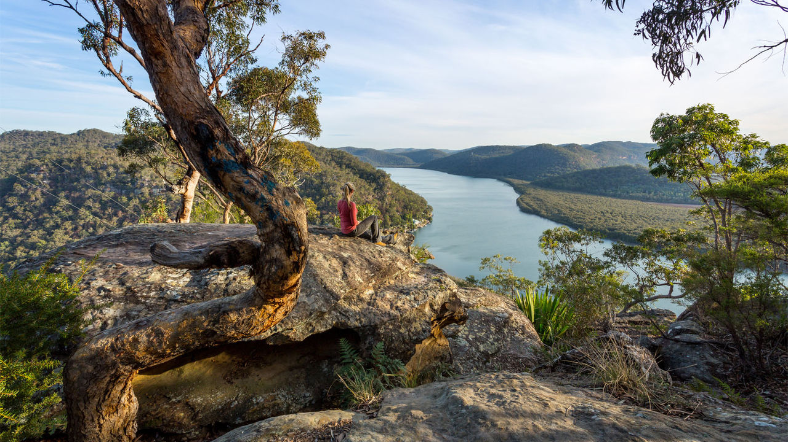
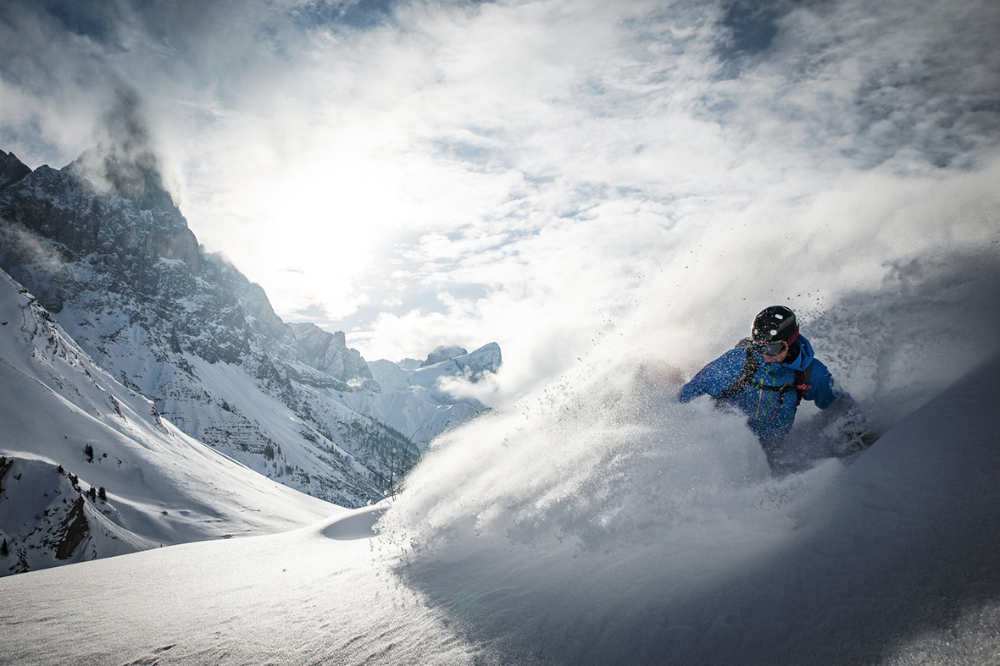
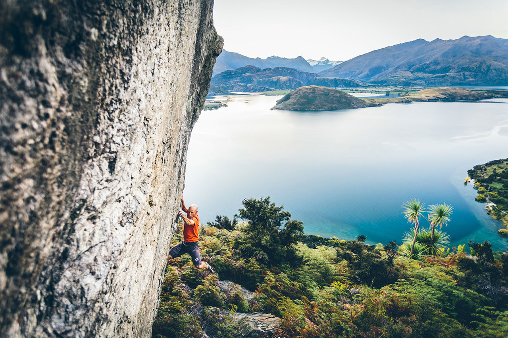
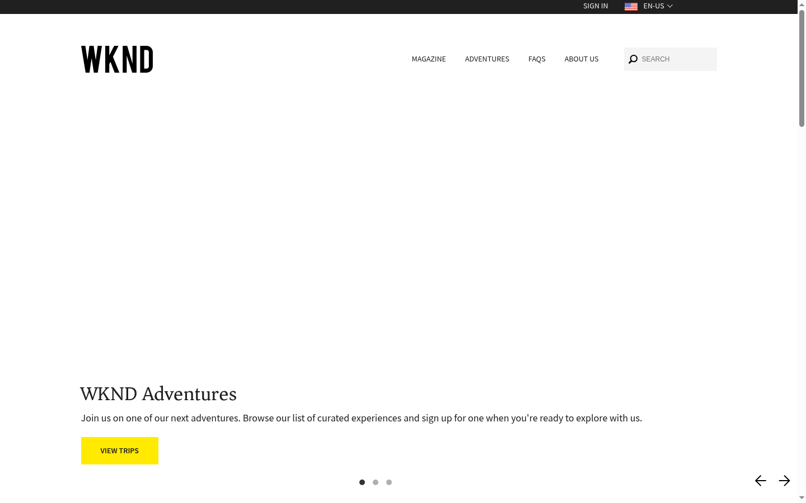
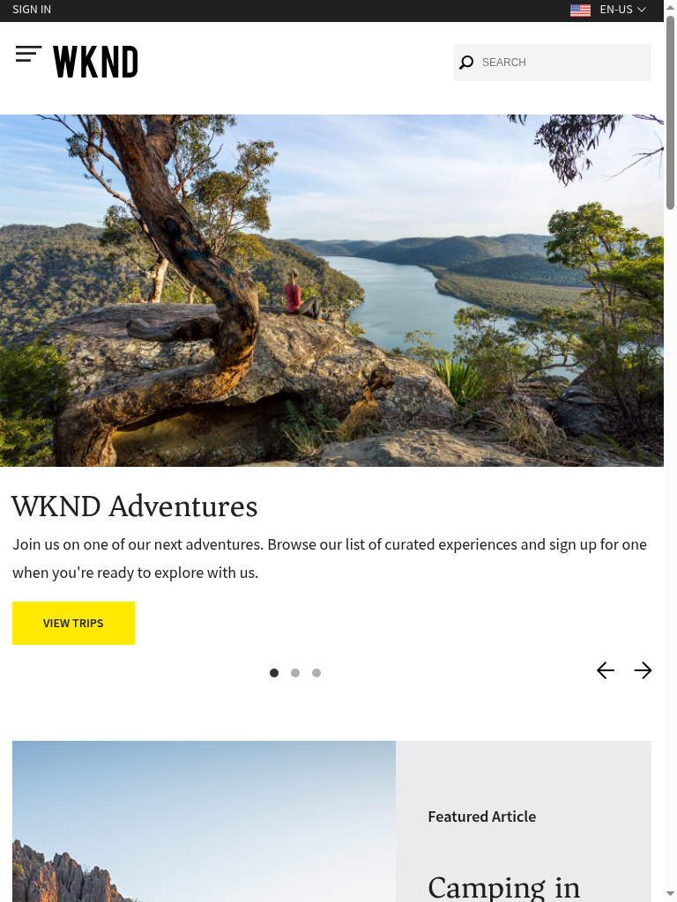
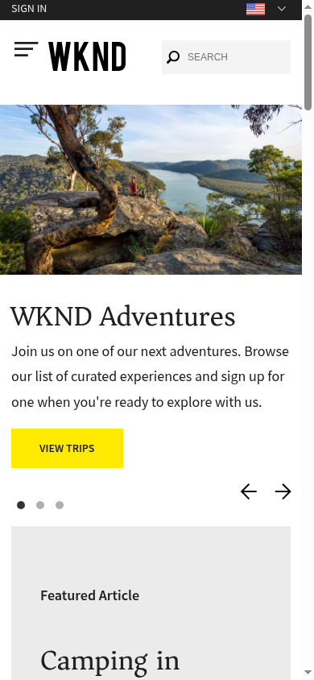

The captured surface of an adventure-and-travel brand: ink-on-white restraint, one loud yellow signal, a warm transitional serif, and genuinely excellent adventure photography that the current layout under-serves.
Monochrome-plus-one. Ink on white carries structure; a single high-voltage yellow carries every call-to-action. Blue lives in the stylesheet but is nearly invisible on the surface.
A legitimate contrast-axis pairing: warm serif display over a humanist sans body. The serif (Asar) never scales past 36px, so it never behaves like a true display voice.
Professional Adobe Stock adventure/landscape imagery with unusually literary alt captions. Full-bleed in the hero — but the same caliber is cropped to thumbnails in the article grid.



Flat yellow rectangle, uppercase ink label, zero radius, no shadow. Everything is hard-edged and shadowless; a short yellow underscore beneath section headings is the signature micro-gesture.
View TripsWarm, plainspoken, second-person invitation. Confident but gentle; reflective rather than adrenaline-forward.
Rendered at desktop 1440 / tablet 768 / mobile 390.



Forced decisions the current surface hands to a redesign. These feed the uplift improvement list and the "what if" candidate selection.
At 1440×900 the title/description/CTA overlay renders below the image, leaving a large blank white first fold above the "WKND Adventures" line. A rotating hero carousel is itself a pattern the design world has largely retired (auto-rotation, low interaction, banner-blindness).
Fix: commit to one decisive full-bleed hero frame with the serif title + CTA composed over the image in the first fold; drop the auto-rotating carousel.
The "Recent Articles" 4-up grid crops magazine-grade Adobe Stock imagery down to ~small thumbnails; the alt captions are near-editorial prose, but the layout gives the photography no room to carry the brand.
Fix: re-foreground the photography — larger editorial tiles, fewer-per-row, image-forward article cards that let the imagery breathe.
Asar is the sole display family yet caps at 36px even in the hero. The brand's most distinctive typographic asset behaves like a reading headline, not an identity.
Fix: let Asar scale into true display range (clamp up to ~5–6rem) in the hero and section openers.
The captured palette holds a saturated blue (#0045FF) that is essentially invisible on the rendered surface. The page is effectively two-color (ink + yellow), which reads flatter than the brand's own ladder allows.
Fix: either re-weight the ladder to give a second color a deliberate role, or fully commit to the ink/yellow monochrome as an intentional identity (not an accident of under-use).
"Next Adventures" (carousel), "Climbing New Zealand" (single teaser), and "Where do you want to go?" (4-up grid) are three consecutive trip-routing bands, and the CTAs (VIEW TRIPS / SEE TRIP / ALL TRIPS) are near-synonyms competing for the same click.
Fix: collapse the trip-routing bands into one decisive destination module with a single dominant CTA; differentiate Magazine vs Adventures routes clearly.
The homepage has no h1 (all headings are h2/h3, an AEM template artifact), and the empty first fold delays the visitor learning what WKND is. Weak for accessibility heading order and for orientation.
Fix: promote the hero headline to a true h1 with a one-line value proposition in the first fold.